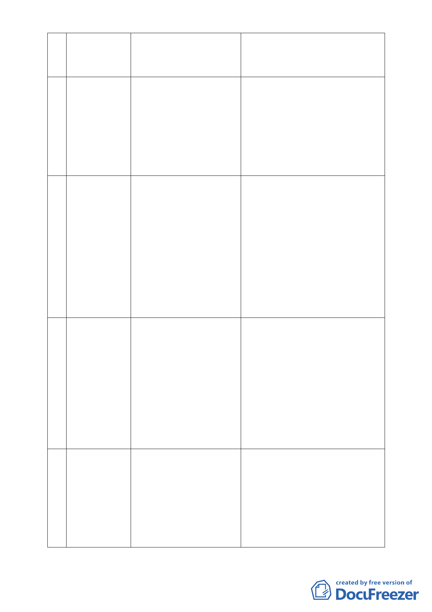

計畫案
5 配合臺北市捷 羅委員孝賢
運信義線東延
段工程變更住 101.1.19
宅區為土地開 第 632 次組成專案小組
發區（捷）主要
計畫及擬定暨
劃定都市更新
地區細部計畫
案
6 變更臺北市文 張委員桂林
山區木柵段三
小段 623 地號 101.3.29
等 27 筆土地第 第 633 次組成專案小組
三種住宅區為
第三種住宅區
（特）暨修訂木
柵段三小段
680 地號等 11
筆第一種商業
區（特）土地使
用分區管制細
部計畫案
7 變更臺北市內湖 辛委員晚教
區成功路 5 段大 101.8.30
湖公園北側部分 第 636 次組成專案小組
保護區及道路用
地為社會福利特
定專用區主要計
畫案
擬定臺北市內湖
區成功路 5 段大
湖公園北側社會
福利特定專用區
細部計畫案
8 「修訂本市都市 黃委員志弘
計畫『臺北市都 102.9.26
市計畫劃定山坡 第 649 次組成專案小組
地開發建築管制
規定第一點』案」
張委員桂林、辛委員晚教、黃委員台
生、李委員永展、王委員惠君、王委
員聲威
辛委員晚教、陳委員盈蓉、王委員聲
威、張委員培義、陳委員春銅、劉委
員小蘭、黃委員榮峰
張委員桂林、黃委員台生、李委員永
展、陳委員盈蓉、陳委員春銅
黃委員秀莊、黃委員榮峰
辛委員晚教、張委員桂林、黃委員世
孟、李委員永展、羅委員孝賢、陳委
員春銅、王委員聲威、張委員培義、
吳委員盛忠、黃委員書禮、黃委員榮
峰
-4-